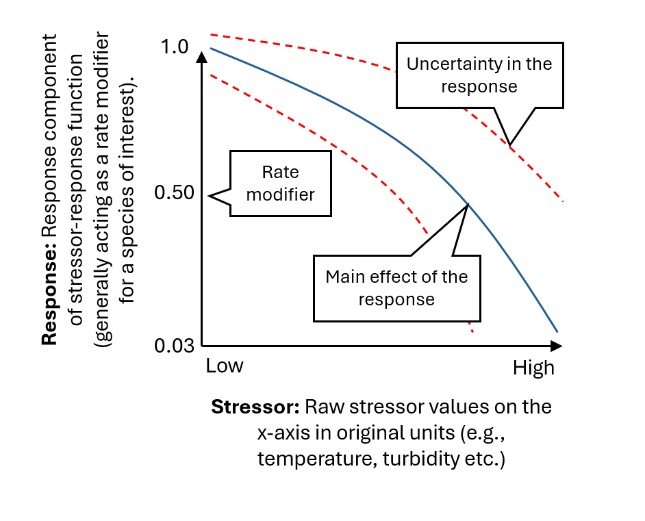

2 Stressor-Response Functions
Stressor-response functions describe the relationship between a specific stressor (such as habitat loss, temperature, or a pollutant) and the response of a target species, where responses can include reduced abundance, growth rate, reproduction, or mortality ((Rosenfeld et al., 2024); (Jarvis et al., 2023)). Stressor-response functions are used to predict how a population (or study system) will respond to changes in the environment and to help identify thresholds or “critical levels” at which a stressor becomes harmful. Stressor-response functions are often used to inform environmental policy and management decisions, for example, by identifying risk levels of pollution or temperature change for a particular species or ecosystem1. Stressor-response functions are generally developed through primary research (i.e., mechanistic, empirical, experimental etc.) and expert opinion ((Pirotta et al., 2022); (Jarvis et al., 2023)). Stressor-response functions are often developed continuous empirical or mechanistic drelationships and identification of specific thresholds as harmful or benign will often be a subjective user-defined activity for stressors and responses that are without direct regulatory guidance (e.g., habitat area, population size).


There are many types of stressor-response functions, including linear, threshold, and non-linear ((Rosenfeld, 2017); (Larned & Schallenberg, 2019)). Linear functions describe a simple, linear relationship between the stressor and the response, with the response increasing or decreasing at a constant rate as the stressor increases. Threshold functions describe a breakpoint at which a stressor becomes harmful, beyond which the response increases rapidly. Non-linear functions describe more complex relationships, with the response changing at different rates as the stressor increases. The example provided in Figure fig-1 shows a customized non-linear stressor-response function fit to empirical data (reference points). Stressors do not always act independently ((Schäfer & Piggott, 2018); (Jarvis et al., 2023)), and it is also possible to include interactions among variables in stressor-response functions, such as the risk of exposure to a harmful pathogen being temperature dependent.
For a more in-depth discussion on the foundations of stressor-response functions, refer to the following resources:
- (Rosenfeld et al., 2024); (Jarvis et al., 2023): Conceptual overviews of stressor-response functions as a generalizable model for context dependence. This paper provides a valuable overview to conceptualize stressors as a mechanism to characterize the state of a system and ecological process. (Jarvis et al., 2023) also outline common forms of stressor-response functions and key considerations for the creation of a stressor-response function from empirical data.
- (Piet et al., 2021): A roadmap towards quantitative cumulative impact assessments: Every step of the way. Provides an important roadmap for working groups to consider linkages between land-use activities, resulting ecosystem pressures, functional linkages in space and time (exposure) and the consideration of endpoints to target study systems.
Incorporating Indigenous Knowledge: In many instances, stressor-response functions may be developed through expert opinion from local communities based on value systems. Where appropriate, working groups may include a customized stressor-response function to represent potential risks and values based on traditional knowledge systems and expert opinion. Refer to (Houde, 2007) and (Alexander et al., 2019) for further discussion. Examples of many other values-based Indigenous-led cumulative effects management programs exist across Canada.
For some examples of stressor-response functions see the online stressor-response Library: https://mjbayly.com/stressor-response
https://www2.gov.bc.ca/assets/gov/environment/air-land-water/water/waterquality/water-quality-guidelines/approved-wqgs/wqg_summary_aquaticlife_wildlife_agri.pdf.↩︎
Leave questions and comments below (via your GitHub account)